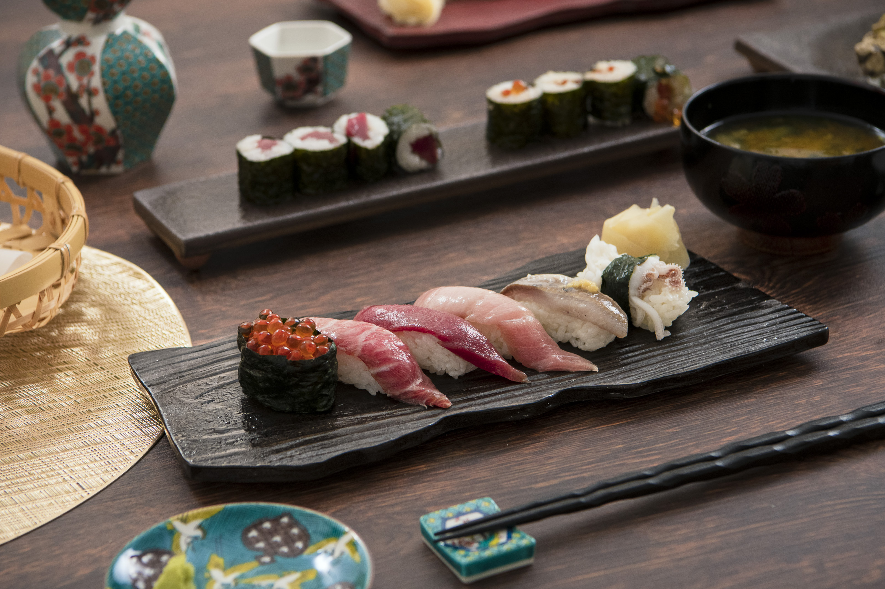

CERAMICS / MINO
Tono region, Gifu
Mino: Choosing a Color for Everyday Food
Curry, pasta or something from the deli: enjoying ceramics does not require an elaborate meal. Mino's range becomes easier to navigate when you start with the food you actually eat and ask what color and shape would make it comfortable to serve.

This regional example is separate from the contemporary maker discussed below.
01 / LOOK CLOSER
Begin with your own senses
Glossy and matte whites behave differently as a background. List three meals you cook often and imagine their reds, greens and browns against the plate. This gives you a personal reference point rather than letting a fashionable color make the decision for you.
02 / MAKERS TODAY
SAKUZAN / 作山窯
Based in Dachi, Toki, SAKUZAN presents collections including DAYS and URBAN. Color provides an inviting introduction, but compare rims and usable surfaces too. Choosing one shade that works with what you own can be more useful than buying several colors at once.
Explore official works and profile ↗03 / AT YOUR TABLE
Three ideas for your table
The following are KOTO editorial suggestions.
Tomato pasta
Leave a little rim visible in a pale deep plate; keep your usual cutlery and change only the vessel.
A deli dinner
Divide two sides between small plates rather than spreading everything across one large dish.
Weekend sharing
Pair a serving platter with smaller plates in related colors; their shapes need not match.


Before you choose
Choose between flat and deep forms according to how often you serve sauces or broths. Check stacking height and storage space as well. The table-setting photograph below is a styling reference, not a photograph of SAKUZAN products.
04 / EXPLORE THE REGION
Connect with the region
The traditional craft cooperative introduces individual makers. Move from a brand collection to an independent kiln to see another part of the region. Rather than treating Mino as a single shopping destination, choose the work that interests you and plan a manageable area to explore.
美濃焼伝統工芸品協同組合 / Mino traditional craft cooperative ↗Regional background and sources
Mino encompasses contrasting traditions including Shino, Oribe, Ki-Seto and Seto-guro. Its breadth resists a single visual definition. White, green, yellow and black glazes can provide a starting point for comparison.
Maker and regional information was checked against the linked official sources on November 8, 2026. Looking and table-setting ideas are editorial commentary, not interviews or maker endorsements. Consult current official guidance for visits and product specifications.